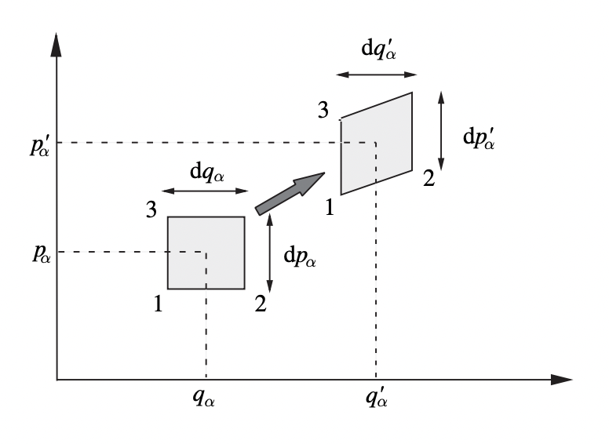

Kinetic Theory
Kinetic theory is the study of the macroscopic properties of large numbers of particles, starting from their classical equations of motion. Kinetic theory seeks to understand not only equilibrium, but the approach to equilibrium. Since classical particles must obey Newton’s Laws, we should in theory be able to study their dynamics by following all of their trajectories. Of course, this isn’t feasible in practice for a large number of interacting particles. We thus need to figure out how to go from the classical dynamics of microscopic particles to the thermodynamics of macroscopic systems. We’ll want to ask how we can define equilibrium for a system of moving particles, whether all systems actually do evolve towards an equilibrium state, and what the time evolution is when the system isn’t yet in equilibrium.
We’ll focus on studying the canonical system of thermodynamics, a box of fixed volume containing a gas of identical particles. We’ll imagine setting the particles free into the box from a fixed position, and studying their dynamics as they fill the box and come into equilibrium. Much of this discussion will exclude other forms of matter like solids and liquids. The microscopic dynamics of solids really requires a quantum mechanical treatment. The microscopic dynamics of liquids overlaps somewhat with the dynamics of gases, the difference being that the distance between particles is much closer than they are with a gas.
Hamiltonian Mechanics
To start, we’ll review the classical mechanics of particles via the Hamiltonian formulation. Consider a system with \(3N\) degrees of freedom and generalized position and momenta \((q_1,p_1), (q_N,p_N), \cdots, (q_N,p_N)\). For simplicity we’ll assume each \(q_i\) and \(p_i\) is a 3-dimensional vector. In that case, \(N\) represents the number of particles in the system. Let \(q = (q_1,q_2,\cdots,q_N)\) and \(p = (p_1,p_2,\cdots,p_N)\). The \(6N\)-dimensional vector \((q,p)\) characterizes the state of the system. The \(6N\)-dimensional manifold all possible states the system can take on is called the phase space of the system.
Assuming the system is conservative, the dynamics of the system are completely determined by the joint Hamiltonian \(H = H(q,p)\). We can then in principle solve for the microscopic equations of motion \(\big(q(t), p(t)\big)\) by solving Hamilton’s equations, a system of \(6N\) differential equations given by \[ \dot q = \frac{\partial H}{\partial p}, \quad \dot p = -\frac{\partial H}{\partial q}. \] Said differently, the Hamiltonian induces a flow on the phase space, with the flow described by Hamilton’s equations. Each flow represents the time evolution of a particular state, determined by the initial conditions.
For two functions \(F(q,p)\) and \(G(q,p)\) defined on phase space, define their Poisson bracket by \[ \{F, G\} \equiv \frac{\partial F}{\partial q} \cdot \frac{\partial G}{\partial p} - \frac{\partial G}{\partial q} \cdot \frac{\partial F}{\partial p}. \] It’s easy to show that the Poisson bracket is anti-symmetric, i.e. \(\{F,G\} = -\{G,F\}\). It’s also bilinear, \[ \begin{align*} \{aF+bG,J\} &= a\{F,J\} + b\{G,J\}, \\ \{F, aG + bJ\} &= a\{F,G\} + b\{F,J\}. \\ \end{align*} \] The Poisson bracket also satisfies the product rule, \[ \frac{d}{dt} \{F,G\} = \bigg\{\frac{dF}{dt}, G\bigg\} + \bigg\{F, \frac{dG}{dt}\bigg\}. \] The total time derivative of any function \(F(q,p)\) is given by its Poisson bracket with the Hamiltonian, \[ \frac{dF}{dt} = \{F, H\}. \] Evidently, if \(F\) is a conserved quantity, its Poisson bracket with \(H\) must vanish, i.e. \(\{F,H\} = 0\). By Taylor expanding, it’s also possible to show that the Poisson bracket of any function of \(F\) with \(H\) must vanish, i.e. that \(\{f(F), H\} = 0\) for any analytic function \(f(F)\).
One result that we’ll frequently use is that the integral of a Poisson bracket with the Hamiltonian over all of phase space is zero provided the phase space isn’t bounded (and it generally isn’t, at least along the momenta axes). Denote the \(3N\)-dimensional phase space volume element by \(d\Gamma \equiv d^{3N} q \ d^{3N} p\). Then we have \[ \int_\Gamma d\Gamma \ \{F,H\} = 0. \] To see why this is true we just use the definition of the Poisson bracket and integration by parts, \[ \begin{align*} \int_\Gamma d\Gamma \ \{F,H\} &= \int_\Gamma d\Gamma \ \bigg(\frac{\partial F}{\partial q} \cdot \frac{\partial H}{\partial p} - \frac{\partial H}{\partial q} \cdot \frac{\partial F}{\partial p}\bigg) \\ &= \int_\Gamma d\Gamma \ \frac{\partial H}{\partial p} \cdot \frac{\partial F}{\partial q} - \int_\Gamma d\Gamma \ \frac{\partial H}{\partial q} \cdot \frac{\partial F}{\partial p} \\ &= -\int_\Gamma d\Gamma \ \frac{\partial^2 H}{\partial q\partial p} F + \int_\Gamma d\Gamma \ \frac{\partial^2 H}{\partial p\partial q} F + (\text{boundary terms}). \\ \end{align*} \] Since second partials commute, the two integrals cancel each other. Since \(H\) is a Hamiltonian describing a physical system, it must go to zero as \(p\) or \(q\) go to infinity, which means the boundary terms must also vanish as well.
It’s important to note that the microscopic equations of motion are time reversal invariant. That is, if the momenta are reversed, \(p \rightarrow -p\), then the trajectories also reverse, \(q(t) \rightarrow q(-t)\). This is because the Hamiltonian \(H(q,p)\) is invariant to time reversal transformations \((q,p) \rightarrow (q,-p)\). Why is this important to note? Because thermodynamics is not time reversal invariant. Once an isolated system is in equilibrium it will stay in equilibrium. We thus need to figure out how this time reversal invariance property gets lost in the thermodynamic limit.
Liouville’s Theorem
The starting point for kinetic theory is Liouville’s theorem, a statement about how phase space densities evolve in time. Suppose a system of \(N\) particles has some given thermodynamic macrostate \(M\), which will in general be a function of the thermodynamic variables \(T, V, N\), etc. The system will also have some microstate \(\mu\) that’s a function of all the positions \(q\) and momenta \(p\). In general, there will be many possible microstates \(\mu\) for any given macrostate \(M\). Each microstate corresponds to some point in the phase space, which evolves in time. Define a Gibbs ensemble as the set of all possible microstates \(\mu\) that correspond to a given macrostate \(M\). An ensemble represents a cloud of points in phase space, with the cloud of points each evolving in time. Suppose there are \(\mathcal{N}\) points in the ensemble. For a given infinitesimal phase space volume element \(d\Gamma\), we can define an ensemble density \(\rho\) as the limiting ratio of ensemble points inside of a cube \(d\Gamma\) with the total number of ensemble points \(\mathcal{N}\), \[ \rho(q, p, t) d\Gamma \equiv \lim_{\mathcal{N} \rightarrow \infty} \frac{d\mathcal{N}}{\mathcal{N}}. \] The phase space density defines a proper probability density on the phase space since \(\rho \geq 0\) and \[ \int_\Gamma d\Gamma \ \rho = \int_\Gamma \frac{d\mathcal{N}}{\mathcal{N}} = \frac{\mathcal{N}}{\mathcal{N}} = 1. \] We can define an ensemble average for any function \(F(q,p,t)\) on the phase space, \[ \langle F(q,p,t) \rangle \equiv \int_\Gamma d\Gamma \ \rho(q,p,t) F(q,p,t). \] Liouville’s Theorem: Phase space volumes are preserved under time evolution. That is, for any two times \(t\) and \(t'\), the differential volume element \(d\Gamma\) must be the same, \[ d\Gamma(q',p',t') = d\Gamma(q,p,t). \] Proof: Let \(d\Gamma \equiv d\Gamma(q,p,t)\) and \(d\Gamma' \equiv d\Gamma(q',p',t+dt)\), where \(dt\) is infinitesimal. Then we must have \[ \begin{align*} q' &= q + \dot q dt, \\ p' &= p + \dot p dt. \\ \end{align*} \] The goal is to show that \(d\Gamma = d^{3N} q \ d^{3N} p\) is the same as \(d\Gamma' = d^{3N} q' \ d^{3N} p'\). Let’s focus on a particular component \(\alpha\) and show \(dq_\alpha dp_\alpha = dq'_{\alpha} dp'_{\alpha}\).

Taking the differentials of \(q'_\alpha\) and \(p'_\alpha\), we have \[ \begin{align*} dq'_\alpha &= dq_\alpha + \frac{\partial \dot q_\alpha}{\partial q_\alpha} dt, \\ dp'_\alpha &= dp_\alpha + \frac{\partial \dot p_\alpha}{\partial p_\alpha} dt. \\ \end{align*} \] Then evidently \[ dq'_\alpha dp'_\alpha = dq_\alpha dp_\alpha \bigg[1 + \bigg(\frac{\partial \dot q_\alpha}{\partial q_\alpha} + \frac{\partial \dot p_\alpha}{\partial p_\alpha} \bigg) \bigg]. \] Using Hamilton’s equations, however, we have that \[ \frac{\partial \dot q_\alpha}{\partial q_\alpha} + \frac{\partial \dot p_\alpha}{\partial p_\alpha} = \frac{\partial}{\partial q_\alpha} \frac{\partial H}{\partial p_\alpha} - \frac{\partial}{\partial p_\alpha} \frac{\partial H}{\partial q_\alpha} = 0. \] Thus, to first order we have \(dq_\alpha dp_\alpha = dq'_{\alpha} dp'_{\alpha}\) for each \(\alpha\). Multiplying them all together, we finally have \(d\Gamma' = d\Gamma\), as desired. \(\text{Q.E.D.}\)
Liouville’s theorem as stated is equivalent to saying that the phase space density is an incompressible fluid. That is, the flow velocity on phase space has zero divergence. Indeed, we have \[ \nabla_{q,p} \cdot (\dot q, \dot p) = \frac{\partial \dot q}{\partial q} + \frac{\partial \dot p}{\partial p} = \frac{\partial}{\partial q} \frac{\partial H}{\partial p} - \frac{\partial}{\partial p} \frac{\partial H}{\partial q} = 0. \] Define the stream derivative or the material derivative of a function \(f(q,p,t)\) as the total time derivative, \[ \frac{Df}{Dt} \equiv \frac{df}{dt}. \] The stream derivative represents how any given flow of \(f\) changes in time. If you follow any given set of points in time, they’ll evolve according to the stream derivative. This contrasts with the point derivative \(\frac{\partial f}{\partial t}\), which represents how \(f\) changes at a fixed point \(q,p\) in time.
The stream derivative of the phase space density can evidently be related to the point derivative by \[ \begin{align*} \frac{D\rho}{Dt} &= (\dot q, \dot p) \cdot \nabla_{q,p} \ \rho \ + \frac{\partial \rho}{\partial t} \\ &= \dot q \frac{\partial \rho}{\partial q} + \dot p \frac{\partial \rho}{\partial p} + \frac{\partial \rho}{\partial t} \\ &= \frac{\partial \rho}{\partial q}\frac{\partial H}{\partial p} - \frac{\partial \rho}{\partial p} \frac{\partial H}{\partial q} \\ &= \{\rho, H\} + \frac{\partial \rho}{\partial t}. \end{align*} \] Liouville’s theorem implies that the stream derivative of \(\rho\) must vanish. Since \(d\Gamma' = d\Gamma\), we must have \(\rho' d\Gamma' = \rho d\Gamma\), or \((\rho'-\rho) d\Gamma = 0\), which implies \(\rho'=\rho\). We’ve thus derived Liouville’s equation, which says how the density at any given point in phase space evolves in time, \[ \frac{\partial \rho}{\partial t} = -\{\rho, H\} = \{H,\rho\}. \] For convenience, it’s also common to define a Liouville operator \(\mathcal{L}\) by \[ \mathcal{L}[\rho] \equiv \{\rho, H\} + \frac{\partial \rho}{\partial t}. \] In this language, Liouville’s equation can also be written as \(\mathcal{L}[\rho] = 0\).
We can use Liouville’s equation to find the time derivative of an ensemble average. If \(F(q,p)\) is some time-independent function on phase space. Using integration by parts, we have \[ \frac{d}{dt} \langle F \rangle = \int_\Gamma d\Gamma \ F \frac{\partial \rho}{\partial t} = -\int_\Gamma d\Gamma \ F \ \{\rho, H\} = \int_\Gamma d\Gamma \ \rho \ \{F, H\} = \bigg\langle \frac{dF}{dt} \bigg\rangle. \] That is, the time derivative of an ensemble average is the ensemble average of the time derivative.
While all this is nice, our entire purpose is to figure out what happens at or near equilibrium. At equilibrium, the density can’t depend explicitly on time, i.e. \(\rho_{eq} = \rho(q,p)\). This evidently implies \[ \frac{\partial \rho_{eq}}{\partial t} = -\{\rho_{eq}, H\} = 0. \] A sufficient condition for \(\{\rho_{eq}, H\}\) to vanish is that \(\rho_{eq}\) only be an explicit function of the conserved quantities in the system. This is called the basic assumption of statistical mechanics. In the simplest case where only energy is conserved, we’d have \[ \rho_{eq} = \rho(H(q,p)). \] Recall that this requires the Poisson bracket to vanish since we can expand \(\rho\) in powers of \(H\). Two common examples of equilibrium densities we’ll see in statistical mechanics are \(\rho_{eq} = \delta(H(q,p)-E)\), called the microcanonical ensemble, and \(\rho_{eq} \propto e^{-\beta H(q,p)}\), called the canonical ensemble.
Note that we still haven’t shown that it’s even possible that \(\rho \rightarrow \rho_{eq}\) as \(t \rightarrow \infty\). This must happen for the basic assumption of statistical mechanics to be true. However, convergence to a stationary distribution contradicts time reversal symmetry, which \(\rho\) itself must in principle satisfy. In fact, \(\rho \nrightarrow \rho_{eq}\) exactly since such a process is irreversible. In principle, if we could follow every point in the ensemble exactly, we could trace the density both forward and backward in time. In practice, however, we can’t do this, meaning we lose information over time. Only in a coarse-grained sense will it be true that \(\rho \rightarrow \rho_{eq}\).
TALK ABOUT ERGODICITY HERE